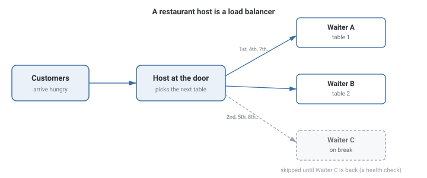
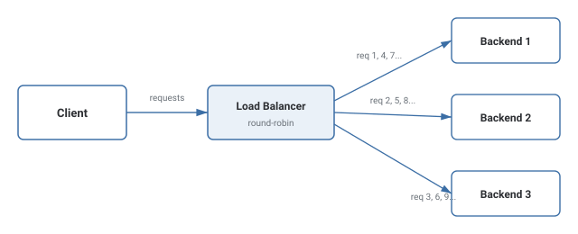
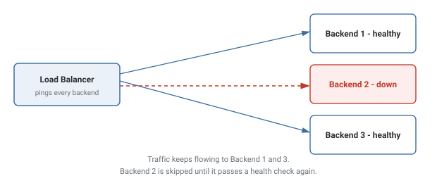

Load Balancing
How a single point in front of many servers decides which one handles each request — and what happens when one of those servers goes down.
In Plain English
Picture a busy restaurant with one host at the door and several waiters inside.

Customers never pick their own waiter — they tell the host what they need, and the host decides. That's the whole idea: clients never talk to backends directly, only to the load balancer in front of them.
A good host doesn't send someone to a waiter who just called in sick. That's a health check. And a host who notices one waiter is drowning in orders while another is idle — that's least-connections instead of blind rotation.
Theory & Diagrams
Why a load balancer exists
One server has a ceiling — CPU, memory, open connections. Past that ceiling, more servers only help if something decides which server handles each request. That's the load balancer: clients only ever talk to it, and it forwards each request to one backend behind it.
Round-robin
Cycle through the backend list in order, wrapping back to the start. No knowledge of server load required — it distributes requests evenly when backends and request costs are roughly equal.

Least connections
Track active requests per backend, and route the next request to whichever has the fewest. Handles uneven request costs better than round-robin, at the cost of tracking live state.
Health checks
The load balancer periodically checks each backend and stops routing to any that fail to respond. Without this, a dead backend keeps receiving its share of traffic — and every one of those requests fails.

Trade-offs
- Backends are roughly equal in capacity and requests cost about the same to serve.
- You want zero extra bookkeeping in the load balancer.
- Request cost varies a lot — some requests tie up a backend far longer than others.
- You can afford the load balancer tracking live per-backend connection counts.
What interviewers are listening for: that a load balancer needs a way to detect a dead backend (health checks) or it keeps routing traffic into a black hole, and being able to name a concrete case where round-robin produces uneven load despite being "fair" by request count.
If you're a fresher: being able to explain round-robin in one sentence, and say why a load balancer without health checks is dangerous, covers most entry-level questions on this topic.
If you're ~3 years in: be ready to talk about a real incident — a backend that stayed in rotation while unhealthy, or a hot spot from uneven request cost — and what you changed (health check interval, switching algorithms, sticky sessions) to fix it.
Real-World Examples
- NGINX / HAProxy — the two most common software load balancers, supporting round-robin, least-connections, and weighted variants.
- AWS Elastic Load Balancer / Google Cloud Load Balancing — managed Layer 4/7 load balancers that also run health checks and can trigger backend auto-scaling.
- DNS-based load balancing — returning a different backend IP for the same hostname on different queries, balancing load before a TCP connection even exists.
- Database read replicas — spreading read queries across replicas while writes go to one primary, the same load-balancing idea applied to storage.
Interview Questions
Click a question to reveal the answer.
How does round-robin load balancing work, and when does it fall short?
It cycles through backends in a fixed order, one request per backend, wrapping back to the start. It falls short when requests have very different costs — a backend can end up overloaded even though it "took its fair share" by request count, not by actual work.
What's the difference between round-robin and least-connections?
Round-robin decides purely by rotation order. Least-connections checks how many requests each backend is currently handling and picks the least-loaded one — it needs live state, round-robin doesn't.
Why does a load balancer need health checks?
Without them, a dead backend keeps receiving its rotation share of traffic forever, and every request routed there simply fails. A health check lets the load balancer detect the failure and stop sending traffic there until it recovers.
What's the difference between Layer 4 and Layer 7 load balancing?
Layer 4 routes based on IP and port only, without reading the request contents — fast and protocol-agnostic. Layer 7 reads the actual HTTP request (path, headers) and can route different paths to different backend pools, at the cost of parsing every request.
Code & Output
A real round-robin load balancer: three backend servers run on real sockets, and the load balancer opens a genuine connection to each one in rotation for 9 requests, then prints the resulting distribution. Unlike a simulation, the 3/3/3 split below is a measured outcome of the routing logic, not a hardcoded result — and the exact millisecond values will vary run to run.